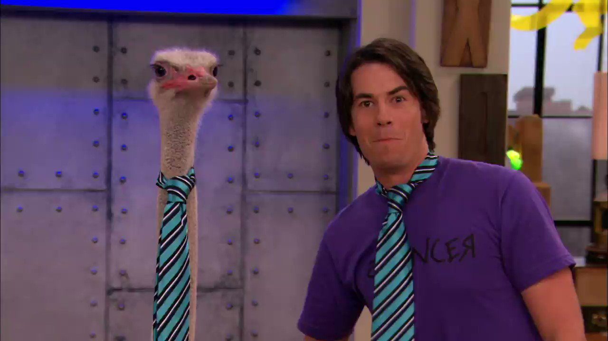
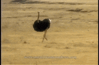
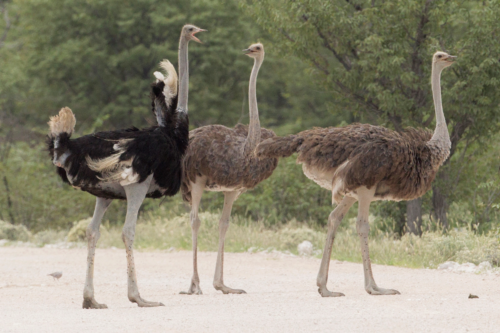

 
Ostriches are of the flightless birds family. They evolved to have a bigger statutre and increased speeds through their long legs. They can reach up to speeds of 44 miles per hour
and are native to souther Africa. Being known as the heavies living birds, it is to be expected that their eggs are also large in size. Their eggs average a whole 6 inches in length and 5 inches in diameter, weighing in at
3 pounds. As mentioned before they naturally appear in the savannas of Africa only, but there have been known reports of feral populations existing in Australia due to escaped Ostriches that left their farms.